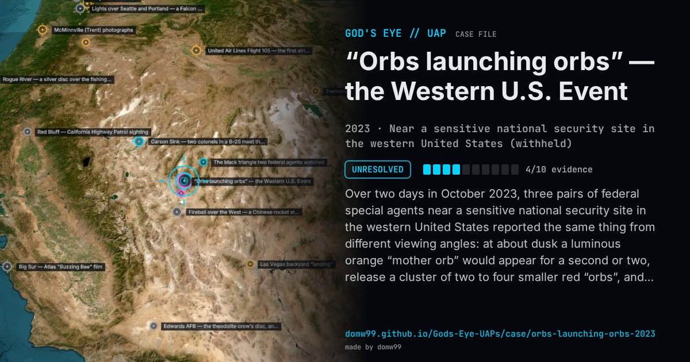

“Orbs launching orbs” — the Western U.S. Event

Over two days in October 2023, three pairs of federal special agents near a sensitive national security site in the western United States reported the same thing from different viewing angles: at about dusk a luminous orange “mother orb” would appear for a second or two, release a cluster of two to four smaller red “orbs”, and vanish, over and over for several hours. The red orbs moved in seemingly coordinated ways and changed altitude before disappearing after a few seconds; in at least one case a red orb hung over a ridgeline for hours. The agents, who know military flares, said these did not look like flares, and all described them as silent. The case was first presented on war.gov in May 2026; AARO’s analysis update, five witness narratives and FBI digital recreations followed in June.
Explanation
AARO’s update of June 2026 finds that about 60 percent of what the agents reported lines up in time and direction with military aircraft that were dropping infrared countermeasure flares in an exercise. For the other 40 percent radar and ADS-B show no aircraft in the agents’ line of sight, and one red “orb” was said to stay still above a ridge for hours, which no flare can do. AARO rates a U.S. capability “plausible, inconclusive”, foreign activity “highly unlikely” and natural causes unlikely; its working hypothesis of “unrecognized technology” for the remainder rests on testimony alone, since no video, photograph or instrument data was collected.
What was seen
Shape: An orange “mother orb”, seen for a second or two, releasing two to four smaller red “orbs” that moved, changed height and faded
Witnesses: Six federal law enforcement special agents, in teams of two
Duration: Repeatedly over several hours, at about dusk, on two days
Sources
- AARO — case analysis update DOW-UAP-D077, Western U.S. Event (war.gov)
- DOW-UAP-D077 (copy at The Black Vault)
- DVIDS — FBI-UAP-PR005, digital recreation, Western United States Event
- Metabunk — DOW-UAP-D077 to D083: Western US Event
Browse
- United States
- 2020s
- Unresolved
- Military encounters
- Official government documents
- Many independent witnesses
- Police witnesses
- Spheres and orbs